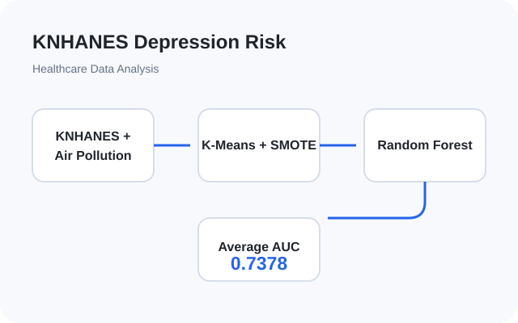
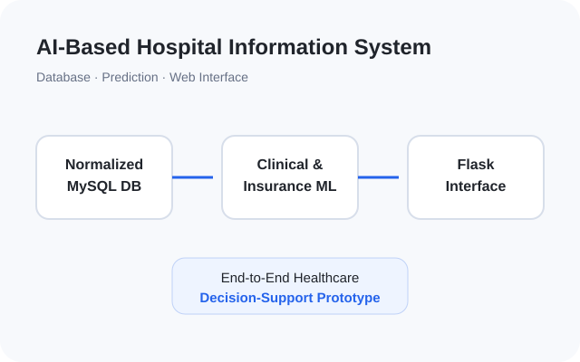
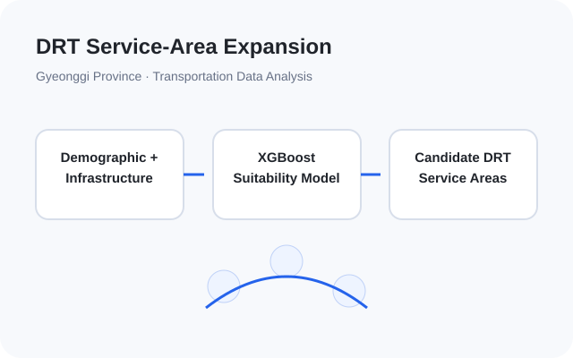
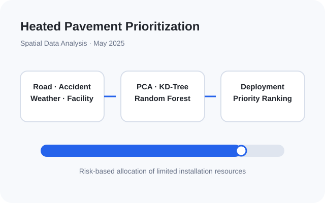
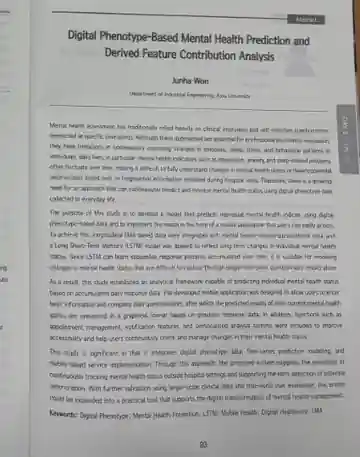

Service Intelligence Laboratory
Undergraduate Research Intern · Ajou University
BRIGHTEN V1의 passive smartphone sensing과 반복 PHQ-9를 기반으로, 우울 심각도 예측과 개인별 행동 이상이 이후 증상 변화에 선행하는지를 분석하는 longitudinal digital health 연구를 진행하고 있습니다.
UNDERGRADUATE RESEARCHER · AJOU UNIVERSITY
Digital Healthcare · Medical AI · Longitudinal & Time-Series Health Data · Medical Image Analysis
아주대학교 산업공학과에서 머신러닝과 데이터 분석을 공부하며, 일상에서 생성되는 건강 데이터와 의료영상으로 환자 상태를 예측하고 변화 신호를 포착하는 의료 AI를 연구하고 있습니다. 현재는 passive smartphone sensing만을 이용한 PHQ-9 기반 우울 심각도 예측과 개인별 행동 이상이 이후 PHQ-9 변화에 선행하는지 분석하고 있으며, 이전에는 환자 촬영 장루 영상의 분류와 data-efficient lesion localization을 연구했습니다.
“개인별 종단적 건강 변화를 포착하고, 실제 의료 환경의 변이에도 견고하게 작동하는 의료 AI를 개발하는 연구자가 되고자 합니다.”
PROGRAMMING
ML / DL
DATABASE / DEVELOPMENT
TOOLS
Undergraduate Research Intern · Ajou University
BRIGHTEN V1의 passive smartphone sensing과 반복 PHQ-9를 기반으로, 우울 심각도 예측과 개인별 행동 이상이 이후 증상 변화에 선행하는지를 분석하는 longitudinal digital health 연구를 진행하고 있습니다.
Undergraduate Research Intern · Ajou University
환자 촬영 장루 영상을 이용한 normal/abnormal classification 및 Grad-CAM 기반 shortcut analysis 연구와, limited-annotation setting에서 WSOL·domain knowledge·Faster R-CNN을 활용한 data-efficient lesion localization 연구를 진행했습니다.
DIGITAL HEALTHCARE & MEDICAL AI
Machine Learning and Data Mining Laboratory · Collaborative Research
Data 15 bounding-box-labeled images와 707 unlabeled smartphone-captured stoma images 기반 limited-annotation dataset 구성
Method WSOL candidate generation → stoma-specific domain knowledge 기반 pseudo-label refinement → Faster R-CNN retraining
Results 707개 candidate 중 673개 pseudo-label 유지 및 final detector mean IoU 0.7796, Dice 0.8681 달성
view research details ↗Machine Learning and Data Mining Laboratory · Collaborative Research
Data 264명 환자의 722장 smartphone-captured stoma images에 ROI-centered preprocessing을 적용한 normal/abnormal classification dataset 구성
Method ConvNeXt 기반 classification, Grad-CAM 기반 attention inspection 및 Label Smoothing 적용
Results Surrounding background에 의존하는 shortcut learning 확인 및 AUC 0.8919 → 0.9200 개선
view research details ↗Yongin Severance Hospital Digital Healthcare Hackathon · Grand Prize
Data Digital phenotype와 repeated EMA data의 participant-level longitudinal sequence 구성
Method LSTM 기반 PHQ-9/GAD-7 prediction 및 derived feature contribution analysis
Results PHQ-9 R² 0.6312, GAD-7 R² 0.6159 달성, personalized monitoring & reporting prototype 구현, Hackathon Grand Prize 수상 및 이후 23rd Avison Biomedical Symposium 2026 발표
view research details ↗KNHANES와 air-pollution data를 이용해 subgroup-specific depression-risk profiling pipeline을 구축했으며 average AUC 0.7378을 기록했습니다.
view project ↗
Normalized MySQL hospital database에 clinical and insurance prediction models와 Flask-based web interface를 통합했습니다.
view project ↗
Demographic, infrastructure, and existing-service data를 이용한 machine-learning framework로 candidate DRT service areas를 도출했습니다.
view project ↗
Road, accident, weather, and facility data를 이용한 spatial machine-learning framework로 heated-pavement deployment 우선순위를 산정했습니다.
view project ↗

23rd Avison Biomedical Symposium 2026 · Digital Medicine in Mental Health · Yongin Severance Hospital · Jun. 2026
Digital phenotype 및 EMA longitudinal data를 활용한 LSTM 기반 PHQ-9/GAD-7 prediction 연구와 personalized monitoring & reporting prototype을 발표했습니다.
view presentation ↗BRIGHTEN V1 · passive smartphone sensing · PHQ-9 · lagged temporal analysis · Aug. 2026 — Present
B.S. Candidate in Industrial Engineering · Expected Early Graduation
GPA 3.92 / 4.50 · 109 credits completed
Microdegree Programs: Artificial Intelligence in Medicine (Completed); New Business Marketing (In Progress)
AWARDS
TRAINING
Medical Artificial Intelligence Bootcamp
Ajou University College of Medicine & Insilicogen · Sep. 2025
SK AI Dream Camp — Advanced Course
Jun. 2025 — Aug. 2025
LEADERSHIP & AFFILIATIONS
President, LOPE
Lotte Scholarship Foundation Student Association · Feb. 2026 — Present
President, WAI
Industrial Engineering Career Academic Club, Ajou University · Feb. 2026 — Present
Member, Integrated Health and Care Organization (IHCO)
Jul. 2025 — Present